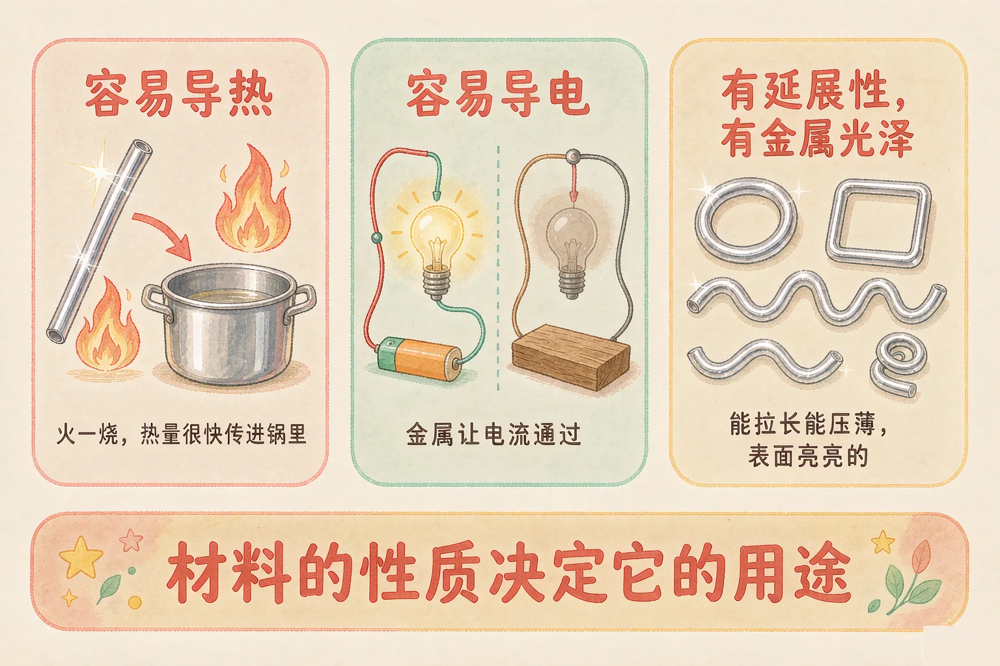
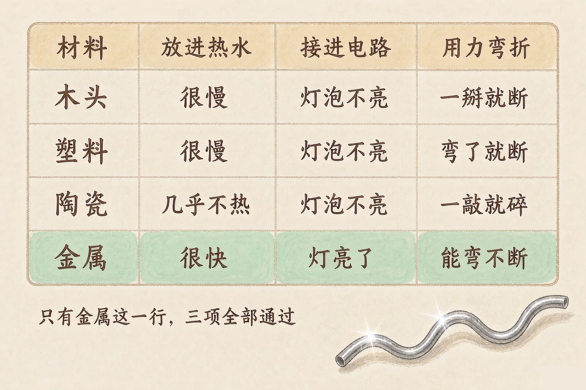
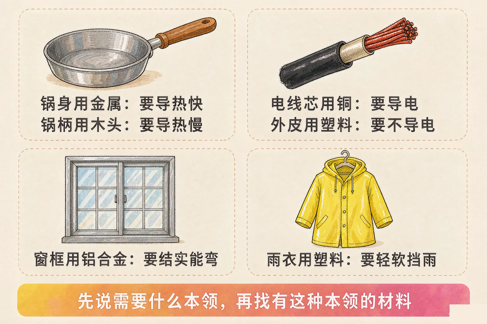

小学五年级 · 物质科学 · 材料
同一口锅，锅身是铁的，锅柄却是塑料的——人们凭什么这样选材料？

选一个你真正好奇的问题，后面的实验都会围着它转。
选择或输入后，这节课会围绕你的问题展开。
先凭直觉选一个，选完立刻看到解释——错了也没关系，正好知道要重点听哪里。
1. 炒菜锅的锅身为什么用金属做？
锅要尽快把火的热量传给菜，所以挑导热快的金属。错因提醒：常见错误是只看价格和外观去解释用途。判断材料用途，要先看这个部位需要什么本领。
2. 电线的外面为什么要包一层塑料？
电线外皮要绝缘，所以用不导电的塑料。错因提醒：不少同学把导热和导电搞混了。导热说的是传热快慢，导电说的是能不能让电流通过，这是两件事。
3. 下面哪一组都是金属的共同性质？
导热、导电、延展性、金属光泽是大多数金属的共同点。金属并不透明，也不是一敲就碎。错因提醒：把陶瓷「脆」的特点误认为金属的特点，是最常见的混淆。
把铁丝、木头、塑料、陶瓷放在一起比一比，你会发现金属有几条别的材料同时都不具备的本领。
容易导热
放进热水，金属很快就烫手；木头和塑料半天还是温的。金属把热量传得快。
容易导电
接进电路，小灯泡马上亮；换成木头、塑料、陶瓷，灯泡不亮。
有延展性
铁丝能弯成各种形状还不断，能被拉成细丝、压成薄片。陶瓷一敲就碎。
有金属光泽
金属表面亮亮的，会反光。这是用眼睛就能看出来的第一条线索。

🔍 深层理解 换个角度再看一遍这件事，看看能不能说出背后的原理。
看见它：看一行就够：金属那一行三项全中，其他三种材料三项全不中。这不是巧合，是金属这一类材料的共同点。
比较它：导热和导电是两件不同的事。有些材料导热快却不导电，所以千万不能把「烫手」和「能通电」当成同一件事。
迁移它：判断一种材料是不是金属，不必认识它：擦亮看有没有光泽，弯一弯看会不会断，放进热水看传热快不快。
先选材料，再点测试。每测一项，右下角的表格就会自动记下结果。四项都测完，你就能一眼看出差别。
| 材料 \ 测试 | 导热 | 导电 | 能否弯折 |
|---|---|---|---|
| 木头 | — | — | — |
| 塑料 | — | — | — |
| 陶瓷 | — | — | — |
| 金属（铁丝） | — | — | — |
知道了性质，生活里那些「为什么用这种材料」的问题就都有答案了。挑材料的思路只有一条：先看这个部位需要什么本领，再去找有这种本领的材料。

很多同学误认为「金属最结实，所以哪里都用金属最好」。可是雨衣用金属就没法穿，锅柄用金属就会烫手。材料没有好坏，只有合不合适。
每件东西都先问一句：它最需要什么本领？然后挑有这种本领的材料。
锅身要很快把火的热量传进锅里，用什么材料？
电线的芯要让电流顺利通过，用什么材料？
窗框要结实、能弯成需要的形状，用什么材料？
雨衣要挡雨、还要轻软，用什么材料？
给四件东西各挑一种最合适的材料，每选一次都会告诉你理由。
题目：同一口炒菜锅，锅身用金属做，锅柄却用塑料或者木头。请说明为什么两处要用不同的材料。
只答「因为金属导热快」是不完整的。题目问的是两处为什么不同，回答里必须把两个部位的要求对比写出来。只说一半，理由就站不住。
先凭直觉选一个，选完立刻看到解释——错了也没关系，正好知道要重点听哪里。
1. 下面哪种说法是正确的？
导热说的是传热，导电说的是通电，是两种不同的性质。错因提醒：把两者看成同一件事，是这一课最常见的混淆。
2. 厨房里的木铲、木勺，主要利用的是木头的什么性质？
木铲要接触热锅，所以必须挑导热慢的材料。错因提醒：有同学以为「木头结实」才是原因，忽略了这里最关键的是不烫手。
3. 关于材料的选择，下面哪种说法最合理？
选材料看的是性质合不合适，不是贵不贵。错因提醒：误认为金属万能，是生活中的常见错误——雨衣、锅柄都不能用金属。
选一件你熟悉的物品，为它挑选材料，再把理由写完整。右侧的自检清单会实时告诉你理由够不够。
① 写出你的方案
② 自检清单 0 / 4
先凭直觉选一个，选完立刻看到解释——错了也没关系，正好知道要重点听哪里。
1. 高压锅的锅身用不锈钢，锅柄用隔热塑料。这样设计主要是因为：
要求相反，材料就相反。锅身要快，锅柄要慢，这就是性质决定用途。
2. 为什么很多窗框用铝合金，而不是用纯铁？最合理的解释是：
既要结实，又要轻、要耐锈，这三条要求一起考虑，铝合金比纯铁更合适。
3. 暖水壶的内胆是双层玻璃，中间抽成接近真空。这样做的主要目的是：
真空里几乎没有东西可以传热，所以热量很难跑掉。这也说明：想要保温，就要选不容易导热的材料和结构。
回到开头那口锅：锅身是金属，因为它要把火的热量快点传进来；锅柄是塑料或木头，因为它要挡住热量、别烫到手。一口锅上用了两种材料，不是随便选的，而是两个部位对导热的要求正好相反。
打个比方记住它：挑材料就像给球队安排位置。跑得快的去当前锋，个子高的去抢篮板——不是谁最好，而是谁最适合这个位置。
三层练习，做完第一、二层就算通关；第三层留给愿意继续探索的同学。
⭐ 基础巩固（必做）
⭐⭐ 能力应用（必做）
⭐⭐⭐ 迁移挑战（选做）
左边是学它之前要先会的，右边是学会之后可以继续探索的，下面是同一领域的伙伴知识。